Raster Analysis: Context Menu¶
The raster context menus are available for rasters that have been imported and for modules which operate on raster data and have raster output data. The menu content depends on the status of the module. To access the context menu, simply right-click on a module.
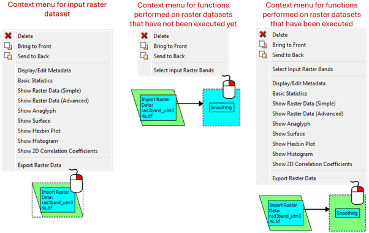
Select Input Raster Bands¶
This option is only available in the context menu of a module that performs a function on an input raster dataset. It allows the user to select which bands to use in the corresponding module that has been right clicked on.
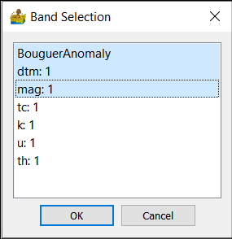
Display/Edit Metadata¶
This module allows for the display and custom editing of metadata associated with raster images. It is especially useful for defining nodata values or band names.
Band Name - Shows the current name of a raster band within the dataset. Change to a different band by using the drop-down menu.
Rename Band Name allows the user to change the name of the currently selected band.
The Dataset section shows physical information about the dataset.
Top Left X-Coordinate: Raster X coordinate in the NW corner of the dataset.
Top Left Y-Coordinate: Raster Y coordinate in the NW corner of the dataset.
X-Dimension: width of a grid cell (in the x-direction).
Y-Dimension: height of a grid cell (in the y-direction).
Null/Nodata Value: A unique value assigned to areas of the dataset with no data.
Rows: Number of rows in the dataset.
Columns: Number of columns in the dataset.
Dataset minimum: Minimum Z value in the dataset.
Dataset maximum: Maximum Z value in the dataset.
Dataset mean: Mean Z value in the dataset.
Dataset units: A label used in graphs to denote the units of the data in the currently selected band.
Data type: The data type such as float32, float64, integer etc.
Acquisition Date: Data collection date of the currently selected band
Input Projection: Current projection assigned to the raster band. It can be reassigned, but note that this does not reproject the data.
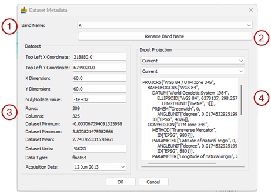
Basic Statistics¶
This shows statistics with respect to the output data. The statistics can be saved in a CSV file. They include:
Minimum
Maximum
Mean
Standard Deviation
Median
Median Absolute Deviation
Number of samples
Number of columns
Number of rows
Skewness
Kurtosis
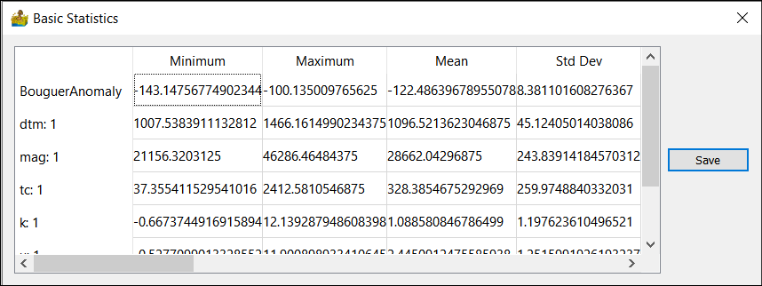
Show Raster Data (Simple)¶
This is convenient image display for raster data. Only one band can be viewed at a time. The band can be selected for multiband data. For more display options, use the Show Raster Data (Advanced) module. The options on this interface are:
Bands – Select the band to be displayed.
Colormap – Select a colormap for the data display. The user can choose between Viridis, Jet, Gray* and **Terrain.
Standard image display setting that allows the user to zoom into specific areas of the image, move the zoomed in area around, return to the full image, save the image with the colour bar, etc.
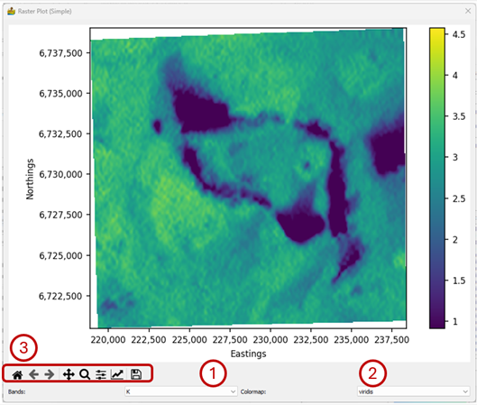
Show Raster Data (Advanced)¶
This opens the Raster Data Display window discussed in Raster Analysis: Description of Modules
Show Anaglyph¶
An anaglyph of the raster data (3D image) can be displayed. Data is reprocessed into two images, one for each eye, and then superimposed. This type of display needs glasses to see the 3D effect. Red-Green glasses are a common type. Options are:
Full Image - shows a full image of the data
Contour - slider to display a simple contour version of the data
Bands - dropdown to choose the band to display
Type - Choice for which type of anaglyph to calculate. This can be Dubois (red-green), green-magenta, amber-blue, True (red-green), gray (red-green), optimised (red-green)
Colour Bar - colours to map to the image.
Scale – Multiplier applied to Z values to exaggerate features.
Image angle – angle to tilt each image used for the left and right eyes.
Sunshade – apply sunshade effect to anaglyph.
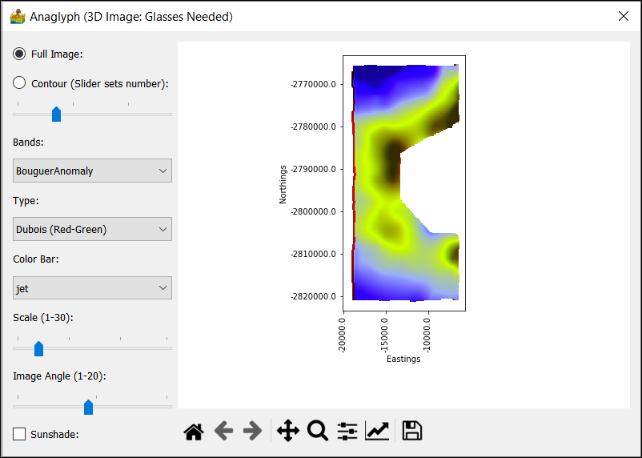
Show Surface¶
This shows a simple surface formed by the data. Change the view angle by holding down the left mouse button and dragging the mouse around. Dragging the mouse while holding down the right mouse button zooms in and out of the surface graph.
The options on this interface are:
Bands – Select the band to be displayed.
Colormap – Select a colormap for the data display. The user can choose between Viridis, Jet, Gray and Terrain.
Standard image display setting that allows the user to zoom into specific areas of the image, move the zoomed in area around, return to the full image, save the image with the colour bar, etc.
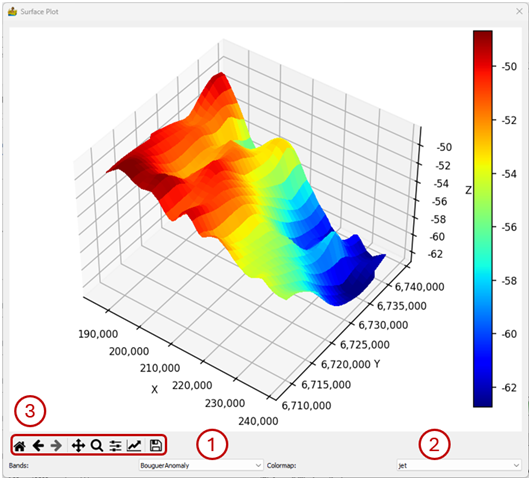
Show Hexbin Plot¶
A hexbin plot is a type of scatter gram, where the points on the scatter gram are binned, and the amplitude of the bins are shown in colour. The scale of the amplitudes is given in log in order to increase the amount of information on the plot.
The options on this interface are:
X Band – Select the band to show on the x-axis.
Y Band – Select the band to show on the y-axis.
The values of the bands assigned to X and Y at the cursor locality.
Standard image display setting that allows the user to zoom into specific areas of the image, move the zoomed in area around, return to the full image, save the image with the colour bar, etc.
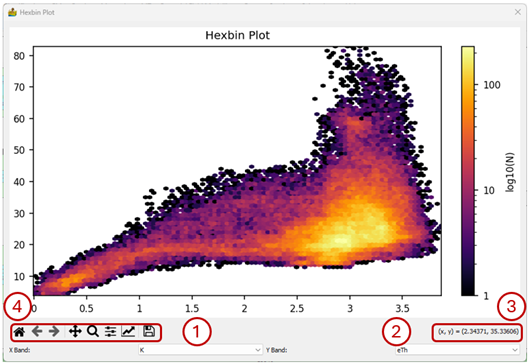
Show Histogram¶
This shows the histogram for a band of data. The options on this interface are:
Log Y Axis – By default the data are displayed on a linear Y-axis, but the user has the option to use a logarithmic y-axis.
Cumulative – The user has the option to display the data in a cumulative form. This is useful when trying to see how many values are above or below a certain threshold.
Bands – Select the band for which the histogram must be displayed.
Standard image display setting that allows the user to zoom into specific areas of the image, move the zoomed in area around, return to the full image, save the image with the colour bar, etc.
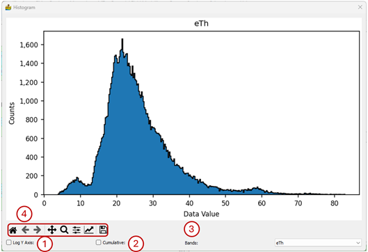
Show 2D Correlation Coefficients¶
The 2D correlation coefficients show the degree of correlation between all the bands in a dataset. It is sometimes used in cluster analysis as a preparatory step in order to exclude bands of information which are too similar.
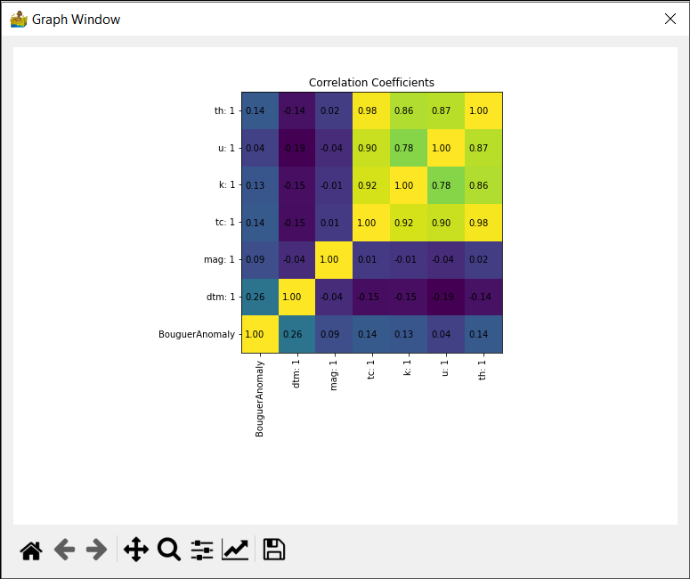
Export Data¶
This exports the raster data into a variety of raster formats, including ENVI, ER Mapper, GeoTIFF, Geosoft GXF and Surfer. In most cases the GDAL library was used.
The user has the following options:
Select the locality, filename and format of the output file.
Select the bands to export by clicking on them. Bands highlighted in grey will be exported. A band can be deselected by clicking on it a second time.
The output bands can be sorted by band name.
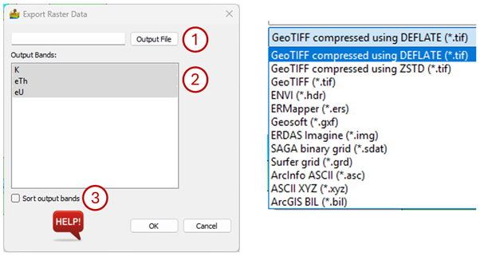